netty的模型主要是reactor主从上进行优化，本文主要介绍了各种线程模型，以及netty模型，并且通过简单案例说明了异步和netty的使用。
线程模型
不同的线程模式，对程序的性能有很大影响，为了搞清Netty线程模式，我们来系统的讲解下各个线程模式，最后看看Netty线程模型有什么优越性。
目前存在的线程模型有：
传统阻塞I/O服务模型
Reactor模式
根据Reactor的数量和处理资源池线程的数量不同，有3种典型的实现
单Reactor单线程
单Reactor多线程
主从Reactor多线程
Netty线程模式
基于主从Reactor多线程模型做了一定的改进(主从Reactor多线程模型有多个Reactor)
传统阻塞I/O服务模型
工作原理图
黄色的框表示对象， 蓝色的框表示线程
白色的框表示方法(API)
模型特点
1)采用阻塞IO模式获取输入的数据
2)每个连接都需要独立的线程完成数据的输入，业务处理， 数据返回
问题分析
1)当并发数很大，就会创建大量的线程，占用很大系统资源
2)连接创建后，如果当前线程暂时没有数据可读，该线程 会阻塞在read 操作，造成线程资源浪费
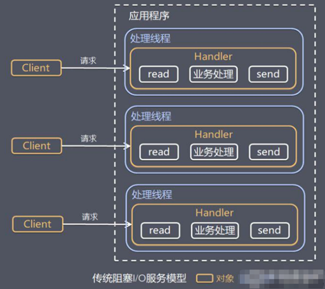
Reactor模式
针对传统阻塞 I/O 服务模型的 2 个缺点，解决方案：
基于 I/O 复用模型：多个连接共用一个阻塞对象，应用程序只需要在一个阻塞对象等待，无需阻塞等待所有连接。当某个连接有新的数据可以处理时，操作系统通知应用程序，线程从阻塞状态返回，开始进行业务处理
Reactor 对应的叫法: 1. 反应器模式 2. 分发者模式(Dispatcher) 3. 通知者模式(notifier)
基于线程池复用线程资源：不必再为每个连接创建线程，将连接完成后的业务处理任务分配给线程进行处理，一个线程可以处理多个连接的业务。
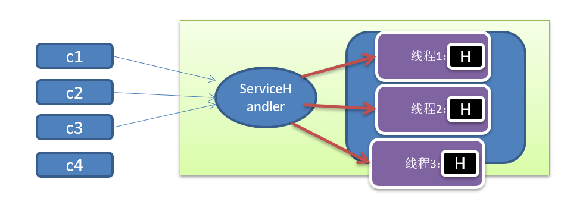
I/O 复用结合线程池，就是 Reactor 模式基本设计思想，如图：
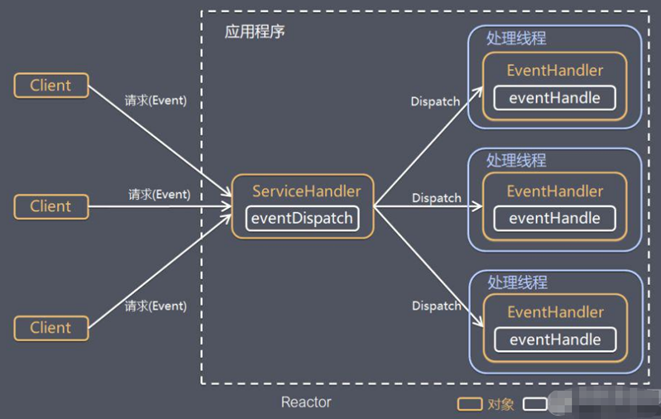
说明:
1)Reactor 模式，通过一个或多个输入同时传递给服务处理器的模式(基于事件驱动)
2)服务器端程序处理传入的多个请求，并将它们同步分派到相应的处理线程， 因此Reactor模式也叫 Dispatcher模式
3)Reactor 模式使用IO复用监听事件， 收到事件后，分发给某个线程(进程)， 这点就是网络服务器高并发处理关键
Reactor 模式中核心组成：
1)Reactor：Reactor 在一个单独的线程中运行，负责监听和分发事件，分发给适当的处理程序来对 IO 事件做出反应。 它就像公司的电话接线员，它接听来自客户的电话并将线路转移到适当的联系人；
2)Handlers：处理程序执行 I/O 事件要完成的实际事件，类似于客户想要与之交谈的公司中的实际官员。Reactor 通过调度适当的处理程序来响应 I/O 事件，处理程序执行非阻塞操作。
单reactor单线程
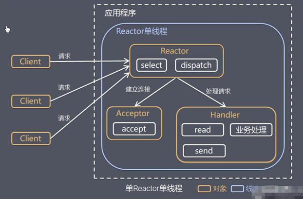
之前写的NIO群聊就是使用的单reactor单线程
1)Select 是前面 I/O 复用模型介绍的标准网络编程 API，可以实现应用程序通过一个阻塞对象监听多路连接请求
2)Reactor 对象通过 Select 监控客户端请求事件，收到事件后通过 Dispatch 进行分发
3)如果是建立连接请求事件，则由 Acceptor 通过 Accept 处理连接请求，然后创建一个 Handler 对象处理连接完成后的后续业务处理
4)如果不是建立连接事件，则 Reactor 会分发调用连接对应的 Handler 来响应
5)Handler 会完成 Read→业务处理→Send 的完整业务流程
结合实例：服务器端用一个线程通过多路复用搞定所有的 IO 操作（包括连接，读、写等），编码简单，清晰明了，但是如果客户端连接数量较多，将无法支撑，前面的 NIO 案例就属于这种模型。
方案优缺点分析
1)优点：模型简单，没有多线程、进程通信、竞争的问题，全部都在一个线程中完成
2)缺点：性能问题，只有一个线程，无法完全发挥多核 CPU 的性能。Handler 在处理某个连接上的业务时，整个进程无法处理其他连接事件，很容易导致性能瓶颈
3)缺点：可靠性问题，线程意外终止，或者进入死循环，会导致整个系统通信模块不可用，不能接收和处理外部消息，造成节点故障
4)使用场景：客户端的数量有限，业务处理非常快速，比如 Redis在业务处理的时间复杂度 O(1) 的情况
单reactor多线程
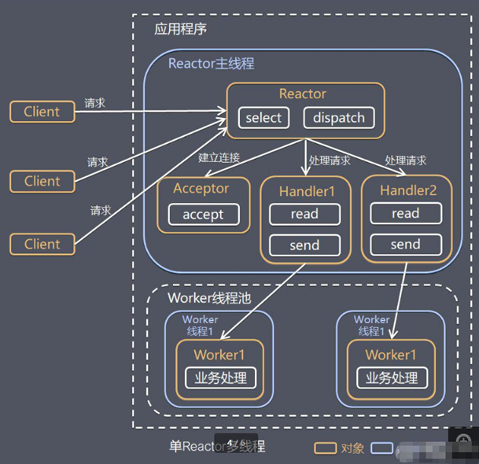
工作原理示意图：
- Reactor 对象通过select 监控客户端请求事件， 收到事件后，通过dispatch进行分发
- 如果建立连接请求， 则由Acceptor 通过accept 处理连接请求， 然后创建一个Handler对象处理完成连接后的各种事件
- 如果不是连接请求，则由reactor分发调用连接对应的handler 来处理
- handler 只负责响应事件，不做具体的业务处理， 通过read 读取数据后，会分发给后面的worker线程池的某个线程处理业务
- worker 线程池会分配独立线程完成真正的业务，并将结果返回给handler
- handler收到响应后，通过send 将结果返回给client
方案优缺点分析：
优点：以充分的利用多核cpu 的处理能力
缺点：多线程数据共享和访问比较复杂， reactor 处理所有的事件的监听和响应，在单线程运行， 在高并发场景容易出现性能瓶颈。
主从reactor多线程
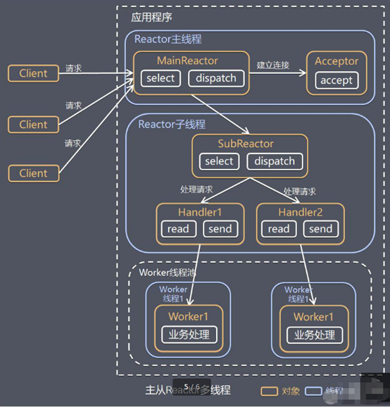
工作原理示意图：
针对单 Reactor 多线程模型中，Reactor 在单线程中运行，高并发场景下容易成为性能瓶颈，可以让 Reactor 在多线程中运行
Reactor主线程 MainReactor 对象通过select 监听连接事件， 收到事件后，通过Acceptor 处理连接事件
当 Acceptor 处理连接事件后，MainReactor 将连接分配给SubReactor
subreactor 将连接加入到连接队列进行监听，并创建handler进行各种事件处理
当有新事件发生时， subreactor 就会调用对应的handler处理
handler 通过read 读取数据，分发给后面的worker 线程处理
worker 线程池分配独立的worker 线程进行业务处理，并返回结果
handler 收到响应的结果后，再通过send 将结果返回给client
Reactor 主线程可以对应多个Reactor 子线程， 即MainRecator 可以关联多个SubReactor
方案优缺点分析：
1)优点：父线程与子线程的数据交互简单职责明确，父线程只需要接收新连接，子线程完成后续的业务处理。
2)优点：父线程与子线程的数据交互简单，Reactor 主线程只需要把新连接传给子线程，子线程无需返回数据。
3)缺点：编程复杂度较高
结合实例：这种模型在许多项目中广泛使用，包括 Nginx 主从 Reactor 多进程模型，Memcached 主从多线程，Netty 主从多线程模型的支持
小结
3 种模式用生活案例来理解
1)单 Reactor 单线程，前台接待员和服务员是同一个人，全程为顾客服
2)单 Reactor 多线程，1 个前台接待员，多个服务员，接待员只负责接待
3)主从 Reactor 多线程，多个前台接待员，多个服务生
Reactor 模式具有如下的优点：
1)响应快，不必为单个同步时间所阻塞，虽然 Reactor 本身依然是同步的
2)可以最大程度的避免复杂的多线程及同步问题，并且避免了多线程/进程的切换开销
3)扩展性好，可以方便的通过增加 Reactor 实例个数来充分利用 CPU 资源
4)复用性好，Reactor 模型本身与具体事件处理逻辑无关，具有很高的复用性
Netty模型
工作原理示意图
简单版
Netty 主要基于主从 Reactors 多线程模型（如图）做了一定的改进，其中主从 Reactor 多线程模型有多个 Reactor
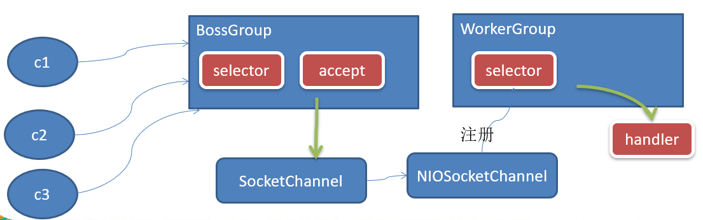
1)BossGroup 线程维护Selector , 只关注Accecpt
2)当接收到Accept 事件时，即客户端连接，即获取SelectionKey 集合, 并获取到对应的SocketChannel ，进一步封装成NIOSocketChannel,注册到Worker 线程(事件循环)维护的Selector 中, 并进行维护
3)当Worker线程监听到selector 中通道发生自己感兴趣的事件后，就进行处理(就由handler)， 注意handler 已经加入到通道
进阶版
Netty 主要基于主从 Reactors 多线程模型（如图）做了一定的改进，其中主从 Reactor 多线程模型有多个 Reactor
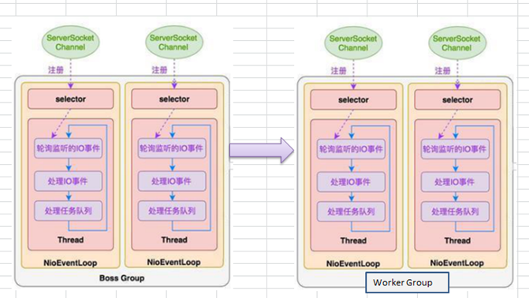
详细版
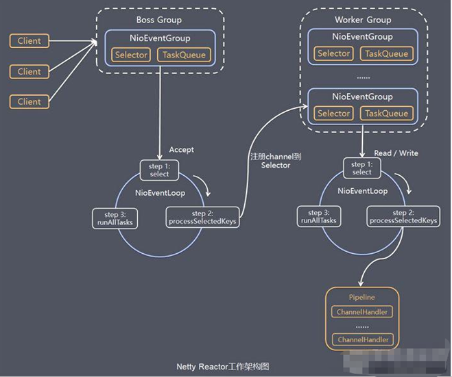
这个图其实并不准确，Netty 抽象出两组线程池，BossGroup 专门负责接收客户端连接，WorkerGroup 专门负责网络读写操作，BossGroup 和 WorkerGroup 的类型都是 NioEventLoopGroup
NioEventLoopGroup
- NioEventLoopGroup 相当于 1 个事件循环组，这个组里BossGroup 和 WorkerGroup 的类型都是 NioEventLoopGroup
- NioEventLoopGroup 中包含多个事件循环 NioEventLoop
- NioEventLoopGroup 有几个线程，可以在创建时来指定 默认为 cpu 核 * 2 //可以追源码
NioEventLoop
NioEventLoop 表示一个不断循环执行处理任务的线程，每个 NioEventLoop 都有一个 selector，用于监听绑定在其上的 socket 网络通道。
BossGroup中的NioEventLoop 循环三步走：
轮询 Accept 事件
处理 Accept I/O 事件，与 Client 建立连接，生成 NioSocketChannel，并将 NioSocketChannel 注册到某个 Worker NioEventLoop 的 Selector 上
处理任务队列中的任务，runAllTasks。任务队列中的任务包括用户调用 eventloop.execute 或 schedule 执行的任务，或者其他线程提交到该 eventloop 的任务//断点可以测试
**Worker 中的NioEventLoop 循环三步走： **
轮询 Read、Write 事件；
处理 I/O 事件，即 Read、Write 事件，在 NioSocketChannel 可读、可写事件发生时进行处理；
处理任务队列中的任务，runAllTasks。
每个Worker NIOEventLoop 处理业务时，会使用pipeline(管道), pipeline 中包含了 channel , 即通过pipeline 可以获取到对应通道, 管道中维护了很多的 处理器
pipeline和channel有很重要的关系，以后细讲
小结
1)Netty 抽象出两组线程池，BossGroup 专门负责接收客户端连接，WorkerGroup 专门负责网络读写操作。
2)NioEventLoop 表示一个不断循环执行处理任务的线程，每个 NioEventLoop 都有一个 selector，用于监听绑定在其上的 socket 网络通道。
3)NioEventLoop 内部采用串行化设计，从消息的读取->解码->处理->编码->发送，始终由 IO 线程 NioEventLoop 负责
NioEventLoopGroup 下包含多个 NioEventLoop
每个 NioEventLoop 中包含有一个 Selector，一个 taskQueue
每个 NioEventLoop 的 Selector 上可以注册监听多个 NioChannel
每个 NioChannel 只会绑定在唯一的 NioEventLoop 上
每个 NioChannel 都绑定有一个自己的 Channel和Pipeline
入门案例
实例要求：Netty 服务器；
在 6668 端口监听，客户端能发送消息给服务器 “hello, 服务器“；服务器可以回复消息给客户端 “hello, 客户端“
server端
NettyServer
package uestc.zhangkx.netty.simple;
import io.netty.bootstrap.ServerBootstrap;
import io.netty.channel.*;
import io.netty.channel.nio.NioEventLoopGroup;
import io.netty.channel.socket.SocketChannel;
import io.netty.channel.socket.nio.NioServerSocketChannel;
/**
* @author zhangkx
* @version 1.0
* @date 2020/10/21 15:59
*/
public class NettyServer {
public static void main(String[] args) throws Exception {
//创建BossGroup 和 WorkerGroup
//说明
//1. 创建两个线程组 bossGroup 和 workerGroup
//2. bossGroup 只是处理连接请求 , 真正的和客户端业务处理，会交给 workerGroup完成
//3. 两个都是无限循环
//4. bossGroup 和 workerGroup 含有的子线程(NioEventLoop)的个数
// 默认实际 cpu核数 * 2
EventLoopGroup bossGroup = new NioEventLoopGroup(1);
EventLoopGroup workerGroup = new NioEventLoopGroup(); //8
try {
//创建服务器端的启动对象，配置参数
ServerBootstrap bootstrap = new ServerBootstrap();
//使用链式编程来进行设置
bootstrap.group(bossGroup, workerGroup) //设置两个线程组
.channel(NioServerSocketChannel.class) //使用NioSocketChannel 作为服务器的通道实现
.option(ChannelOption.SO_BACKLOG, 128) // 设置线程队列得到连接个数
.childOption(ChannelOption.SO_KEEPALIVE, true) //设置保持活动连接状态
// .handler(null) // 该 handler对应 bossGroup , childHandler 对应 workerGroup
.childHandler(new ChannelInitializer<SocketChannel>() {//创建一个通道初始化对象(匿名对象)
//给pipeline 设置处理器
@Override
protected void initChannel(SocketChannel ch) throws Exception {
System.out.println("客户socketchannel hashcode=" + ch.hashCode()); //可以使用一个集合管理 SocketChannel， 再推送消息时，可以将业务加入到各个channel 对应的 NIOEventLoop 的 taskQueue 或者 scheduleTaskQueue
ch.pipeline().addLast(new NettyServerHandler());
}
}); // 给我们的workerGroup 的 EventLoop 对应的管道设置处理器
System.out.println(".....服务器 is ready...");
//绑定一个端口并且同步, 生成了一个 ChannelFuture 对象
//启动服务器(并绑定端口)
ChannelFuture cf = bootstrap.bind(6668).sync();
//给cf 注册监听器，监控我们关心的事件
cf.addListener(new ChannelFutureListener() {
@Override
public void operationComplete(ChannelFuture future) throws Exception {
if (cf.isSuccess()) {
System.out.println("监听端口 6668 成功");
} else {
System.out.println("监听端口 6668 失败");
}
}
});
//对关闭通道进行监听
cf.channel().closeFuture().sync();
}finally {
bossGroup.shutdownGracefully();
workerGroup.shutdownGracefully();
}
}
}
NettyServerHandler
package uestc.zhangkx.netty.simple;
import io.netty.buffer.ByteBuf;
import io.netty.buffer.Unpooled;
import io.netty.channel.Channel;
import io.netty.channel.ChannelHandlerContext;
import io.netty.channel.ChannelInboundHandlerAdapter;
import io.netty.channel.ChannelPipeline;
import io.netty.util.CharsetUtil;
/**
*
* 说明
* 1. 我们自定义一个Handler 需要继续netty 规定好的某个HandlerAdapter(规范)
* 2. 这时我们自定义一个Handler , 才能称为一个handler
*
* @author zhangkx
* @version 1.0
* @date 2020/10/21 16:54
*/
public class NettyServerHandler extends ChannelInboundHandlerAdapter {
//读取数据实际(这里我们可以读取客户端发送的消息)
/*
1. ChannelHandlerContext ctx:上下文对象, 含有 管道pipeline , 通道channel, 地址
2. Object msg: 就是客户端发送的数据 默认Object
*/
@Override
public void channelRead(ChannelHandlerContext ctx, Object msg) throws Exception {
System.out.println("服务器读取线程 " + Thread.currentThread().getName() + " channle =" + ctx.channel());
System.out.println("server ctx =" + ctx);
System.out.println("看看channel 和 pipeline的关系");
Channel channel = ctx.channel();
ChannelPipeline pipeline = ctx.pipeline(); //本质是一个双向链表, 出站入站
//将 msg 转成一个 ByteBuf
//ByteBuf 是 Netty 提供的，不是 NIO 的 ByteBuffer.
ByteBuf buf = (ByteBuf) msg;
System.out.println("客户端发送消息是:" + buf.toString(CharsetUtil.UTF_8));
System.out.println("客户端地址:" + channel.remoteAddress());
}
//数据读取完毕
@Override
public void channelReadComplete(ChannelHandlerContext ctx) throws Exception {
//writeAndFlush 是 write + flush
//将数据写入到缓存，并刷新
//一般讲，我们对这个发送的数据进行编码
ctx.writeAndFlush(Unpooled.copiedBuffer("hello, 客户端~(>^ω^<)喵1", CharsetUtil.UTF_8));
}
//处理异常, 一般是需要关闭通道
@Override
public void exceptionCaught(ChannelHandlerContext ctx, Throwable cause) throws Exception {
ctx.close();
}
}
client端
NettyClient
package uestc.zhangkx.netty.simple;
import io.netty.bootstrap.Bootstrap;
import io.netty.channel.ChannelFuture;
import io.netty.channel.ChannelInitializer;
import io.netty.channel.EventLoopGroup;
import io.netty.channel.nio.NioEventLoopGroup;
import io.netty.channel.socket.SocketChannel;
import io.netty.channel.socket.nio.NioSocketChannel;
/**
* @author zhangkx
* @version 1.0
* @date 2020/10/22 9:07
*/
public class NettyClient {
public static void main(String[] args) throws Exception {
//客户端需要一个事件循环组
EventLoopGroup group = new NioEventLoopGroup();
try {
//创建客户端启动对象
//注意客户端使用的不是 ServerBootstrap 而是 Bootstrap
Bootstrap bootstrap = new Bootstrap();
//设置相关参数
bootstrap.group(group) //设置线程组
.channel(NioSocketChannel.class) // 设置客户端通道的实现类(反射)
.handler(new ChannelInitializer<SocketChannel>() {
@Override
protected void initChannel(SocketChannel ch) throws Exception {
ch.pipeline().addLast(new NettyClientHandler()); //加入自己的处理器
}
});
System.out.println("客户端 ok..");
//启动客户端去连接服务器端
//关于 ChannelFuture 要分析，涉及到netty的异步模型
ChannelFuture channelFuture = bootstrap.connect("127.0.0.1", 6668).sync();
//给关闭通道进行监听
channelFuture.channel().closeFuture().sync();
}finally {
group.shutdownGracefully();
}
}
}
NettyClientHandler
package uestc.zhangkx.netty.simple;
import io.netty.buffer.ByteBuf;
import io.netty.buffer.Unpooled;
import io.netty.channel.ChannelHandlerContext;
import io.netty.channel.ChannelInboundHandlerAdapter;
import io.netty.util.CharsetUtil;
/**
* @author zhangkx
* @version 1.0
* @date 2020/10/22 9:08
*/
public class NettyClientHandler extends ChannelInboundHandlerAdapter {
//当通道就绪就会触发该方法
@Override
public void channelActive(ChannelHandlerContext ctx) throws Exception {
System.out.println("client " + ctx);
ctx.writeAndFlush(Unpooled.copiedBuffer("hello, server: (>^ω^<)喵", CharsetUtil.UTF_8));
}
//当通道有读取事件时，会触发
@Override
public void channelRead(ChannelHandlerContext ctx, Object msg) throws Exception {
ByteBuf buf = (ByteBuf) msg;
System.out.println("服务器回复的消息:" + buf.toString(CharsetUtil.UTF_8));
System.out.println("服务器的地址： "+ ctx.channel().remoteAddress());
}
@Override
public void exceptionCaught(ChannelHandlerContext ctx, Throwable cause) throws Exception {
cause.printStackTrace();
ctx.close();
}
}
异步执行
异步执行和任务队列紧密相连
任务队列
有3种典型的使用场景：
1)用户程序自定义的普通任务
2)用户自定义定时任务
3)非当前 Reactor 线程调用 Channel 的各种方法
例如在推送系统的业务线程里面，根据用户的标识，找到对应的 Channel 引用，然后调用 Write 类方法向该用户推送消息，就会进入到这种场景。最终的 Write 会提交到任务队列中后被异步消费
package uestc.zhangkx.netty.simple;
import io.netty.buffer.Unpooled;
import io.netty.channel.ChannelHandlerContext;
import io.netty.channel.ChannelInboundHandlerAdapter;
import io.netty.util.CharsetUtil;
import java.util.concurrent.TimeUnit;
/**
* @author zhangkx
* @version 1.0
* @date 2020/10/22 11:03
*/
public class NettyServerTaskQueueHandler extends ChannelInboundHandlerAdapter {
//读取数据实际(这里我们可以读取客户端发送的消息)
/*
1. ChannelHandlerContext ctx:上下文对象, 含有 管道pipeline , 通道channel, 地址
2. Object msg: 就是客户端发送的数据 默认Object
*/
@Override
public void channelRead(ChannelHandlerContext ctx, Object msg) throws Exception {
//比如这里我们有一个非常耗时长的业务-> 异步执行 -> 提交该channel 对应的
//NIOEventLoop 的 taskQueue中,
//解决方案1 用户程序自定义的普通任务
ctx.channel().eventLoop().execute(new Runnable() {
@Override
public void run() {
try {
Thread.sleep(5 * 1000);
ctx.writeAndFlush(Unpooled.copiedBuffer("hello, 客户端~(>^ω^<)喵2", CharsetUtil.UTF_8));
System.out.println("channel code=" + ctx.channel().hashCode());
} catch (Exception ex) {
System.out.println("发生异常" + ex.getMessage());
}
}
});
ctx.channel().eventLoop().execute(new Runnable() {
@Override
public void run() {
try {
Thread.sleep(5 * 1000);
ctx.writeAndFlush(Unpooled.copiedBuffer("hello, 客户端~(>^ω^<)喵3", CharsetUtil.UTF_8));
System.out.println("channel code=" + ctx.channel().hashCode());
} catch (Exception ex) {
System.out.println("发生异常" + ex.getMessage());
}
}
});
//解决方案2 : 用户自定义定时任务 -》 该任务是提交到 scheduleTaskQueue中
ctx.channel().eventLoop().schedule(new Runnable() {
@Override
public void run() {
try {
Thread.sleep(5 * 1000);
ctx.writeAndFlush(Unpooled.copiedBuffer("hello, 客户端~(>^ω^<)喵4", CharsetUtil.UTF_8));
System.out.println("channel code=" + ctx.channel().hashCode());
} catch (Exception ex) {
System.out.println("发生异常" + ex.getMessage());
}
}
}, 5, TimeUnit.SECONDS);
System.out.println("go on ...");
}
//数据读取完毕
@Override
public void channelReadComplete(ChannelHandlerContext ctx) throws Exception {
//writeAndFlush 是 write + flush
//将数据写入到缓存，并刷新
//一般讲，我们对这个发送的数据进行编码
ctx.writeAndFlush(Unpooled.copiedBuffer("hello, 客户端~(>^ω^<)喵1", CharsetUtil.UTF_8));
}
//处理异常, 一般是需要关闭通道
@Override
public void exceptionCaught(ChannelHandlerContext ctx, Throwable cause) throws Exception {
ctx.close();
}
}
异步模型
1)异步的概念和同步相对。当一个异步过程调用发出后，调用者不能立刻得到结果。实际处理这个调用的组件在完成后，通过状态、通知和回调来通知调用者。
2)Netty 中的 I/O 操作是异步的，包括 Bind、Write、Connect 等操作会简单的返回一个 ChannelFuture。
3)调用者并不能立刻获得结果，而是通过 Future-Listener 机制，用户可以方便的主动获取或者通过通知机制获得 IO 操作结果
4)Netty 的异步模型是建立在 future 和 callback 的之上的。callback 就是回调。重点说 Future，它的核心思想是：假设一个方法 fun，计算过程可能非常耗时，等待 fun返回显然不合适。那么可以在调用 fun 的时候，立马返回一个 Future，后续可以通过 Future去监控方法 fun 的处理过程(即 ： Future-Listener 机制)
Future
1)表示异步的执行结果, 可以通过它提供的方法来检测执行是否完成，比如检索计算等等.
2)ChannelFuture 是一个接口 ： public interface ChannelFuture extends Future<Void>
我们可以添加监听器，当监听的事件发生时，就会通知到监听器
链式操作
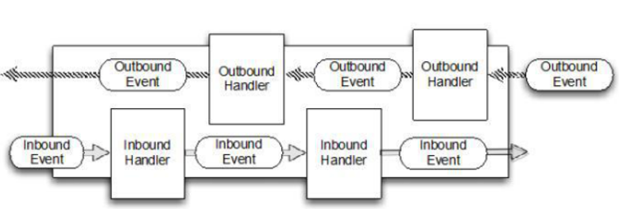
使用链式操作，会让开发从网络底层中解脱出来，而关注与业务逻辑。
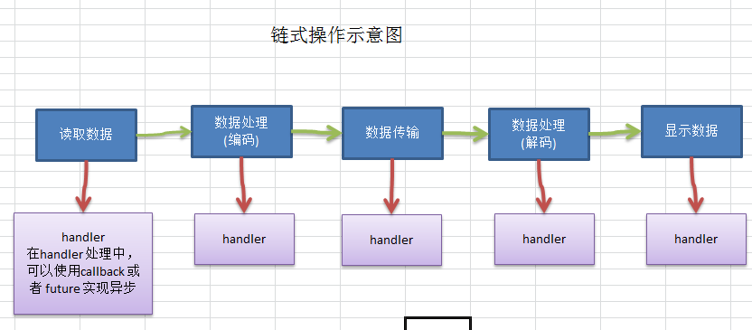
1)在使用 Netty 进行编程时，拦截操作和转换出入栈数据只需要您提供 callback 或利用future 即可。这使得链式操作简单、高效, 并有利于编写可重用的、通用的代码。
2)Netty 框架的目标就是让你的业务逻辑从网络基础应用编码中分离出来、解脱出来
Future-Listener机制
1)当 Future 对象刚刚创建时，处于非完成状态，调用者可以通过返回的 ChannelFuture 来获取操作执行的状态，注册监听函数来执行完成后的操作。
2)常见有如下操作
通过 isDone 方法来判断当前操作是否完成；
通过 isSuccess 方法来判断已完成的当前操作是否成功；
通过 getCause 方法来获取已完成的当前操作失败的原因；
通过 isCancelled 方法来判断已完成的当前操作是否被取消；
通过 addListener 方法来注册监听器，当操作已完成(isDone 方法返回完成)，将会通知指定的监听器；如果 Future 对象已完成，则通知指定的监听器
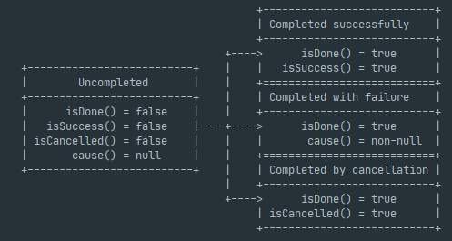
上图是netty源码内容。
举例说明
serverBootstrap.bind(port).addListener(future -> {
if(future.isSuccess()) {
System.out.println(newDate() + ": 端口["+ port + "]绑定成功!");
} else{
System.err.println("端口["+ port + "]绑定失败!");
}
});
小结
相比传统阻塞 I/O，执行 I/O 操作后线程会被阻塞住, 直到操作完成；异步处理的好处是不会造成线程阻塞，线程在 I/O 操作期间可以执行别的程序，在高并发情形下会更稳定和更高的吞吐量